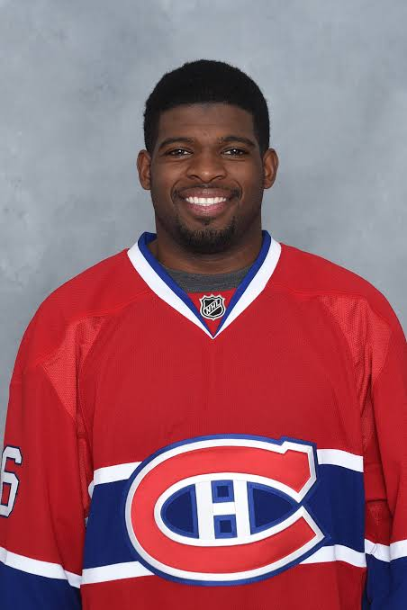

Life of a Subban

Pernell-Karl Sylvester "P.K" Subban is a former professional hockey defenseman who played 13 seasons in the National Hockey League(NHL).Drafted 43rd overall by the Montreal Canadiens in 2007, Subban quickly became one of the league's most dynamic and electrifying defensemen. Known for his explosive skating, powerful slapshot, and higb-energy personality, he won the Norris Trophy as the NHL's top defenseman in 2013. Off the ice, Subban made history off the rink through his immense philanthropic efforts, including a famous $10 milion plege to the Montreal Children's Hospital in 2015.